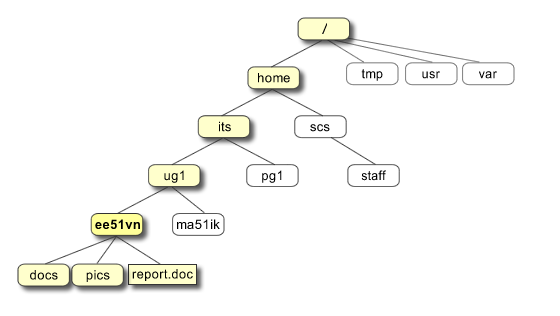
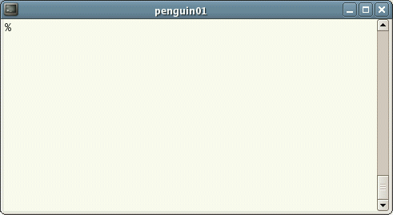

Giới thiệu về UNIX
UNIX là gì?
 UNIX là một
hệ điều hành được tạo ra vào những năm 1960 và đã được phát
triển liên tục kể từ khi đó. Khi nói về hệ điều hành, chúng ta
nói về một bộ các phần mềm làm cho máy tính hoạt động. UNIX là
một hệ điều hành ổn định, đa người dùng, đa nhiệm dành cho cả
máy chủ, máy để bàn lẫn máy tính xách tay.
UNIX là một
hệ điều hành được tạo ra vào những năm 1960 và đã được phát
triển liên tục kể từ khi đó. Khi nói về hệ điều hành, chúng ta
nói về một bộ các phần mềm làm cho máy tính hoạt động. UNIX là
một hệ điều hành ổn định, đa người dùng, đa nhiệm dành cho cả
máy chủ, máy để bàn lẫn máy tính xách tay.
Hệ thống UNIX cũng có thể có giao diện người dùng đồ họa (GUI)
giống như Microsoft Windows cho phép người dùng dễ dàng sử dụng
môi trường máy tính. Tuy nhiên, bạn cần có kiến thức căn bản về
UNIX đối với một vài thao tác không có công cụ đồ họa thay thế
như khi dùng telnet chẳng hạn.
Các kiểu UNIX
 Có
rất nhiều phiên bản khác nhau của UNIX, mặc dù chúng có nhiều
điểm chung. Các phiên bản thông dụng nhất là Sun Solaris,
GNU/Linux và Mac OS X.
Có
rất nhiều phiên bản khác nhau của UNIX, mặc dù chúng có nhiều
điểm chung. Các phiên bản thông dụng nhất là Sun Solaris,
GNU/Linux và Mac OS X.
Hệ điều hành UNIX
The UNIX operating system is made up of three parts; the
kernel, the shell and the programs.
Hệ điều hành UNIX được tạo ra bởi ba thành phần: nhân (kernel),
vỏ (shell) và các phần mềm khác.
Nhân
Nhân UNIX là trung tâm của hệ điều hành: nó phân chia thời gian
và bộ nhớ cho các phần mềm và xử lý các hoạt động trên tập tin
hay thông tin liên lạc.
Để miêu tả cách vỏ và nhân làm việc với nhau, ta giả sử một
người dùng gõ lệnh rm myfile (tức là người dùng muốn xóa tập tin
myfile). Vỏ sẽ tìm trong hệ thống tập tin một tập tin có có chứa
lệnh rm, sau đó nó yêu cầu nhân (thông qua các lời gọi hệ thống)
thực thi chương trình rm đối với tập tin myfile. Khi tiến trình rm myfile đã kết thúc, vỏ sẽ giao lại dấu nhắc UNIX % cho người
dùng, thể hiện rằng nó đang đợi để thực hiện thêm các lệnh khác.
Vỏ
The shell acts as an interface between the user and the kernel. When a user logs in, the login program checks the username and password, and then starts another program called the shell. The shell is a command line interpreter (CLI). It interprets the commands the user types in and arranges for them to be carried out. The commands are themselves programs: when they terminate, the shell gives the user another prompt (% on our systems).
The adept user can customise his/her own shell, and users can use different shells on the same machine. Staff and students in the school have the tcsh shell by default.
The tcsh shell has certain features to help the user inputting commands.
Filename Completion - By typing part of the name of a command, filename or directory and pressing the [Tab] key, the tcsh shell will complete the rest of the name automatically. If the shell finds more than one name beginning with those letters you have typed, it will beep, prompting you to type a few more letters before pressing the tab key again.
History - The shell keeps a list of the commands you have typed in. If you need to repeat a command, use the cursor keys to scroll up and down the list or type history for a list of previous commands.
Tập tin và các tiến trình
Everything in UNIX is either a file or a process.
A process is an executing program identified by a unique PID (process identifier).
A file is a collection of data. They are created by users using text editors, running compilers etc.
Examples of files:
- a document (report, essay etc.)
- the text of a program written in some high-level programming language
- instructions comprehensible directly to the machine and incomprehensible to a casual user, for example, a collection of binary digits (an executable or binary file);
- a directory, containing information about its contents, which may be a mixture of other directories (subdirectories) and ordinary files.
Cấu trúc cây thư mục
All the files are grouped together in the directory structure. The file-system is arranged in a hierarchical structure, like an inverted tree. The top of the hierarchy is traditionally called root (written as a slash / )

In the diagram above, we see that the home directory of the undergraduate student "ee51vn" contains two sub-directories (docs and pics) and a file called report.doc.
The full path to the file report.doc is "/home/its/ug1/ee51vn/report.doc"
Khởi động thiết bị đầu cuối UNIX (terminal)
To open an UNIX terminal window, click on the "Terminal" icon from Applications/Accessories menus.

An UNIX Terminal window will then appear with a % prompt, waiting for you to start entering commands.



M.Stonebank@surrey.ac.uk, © 9th October 2000